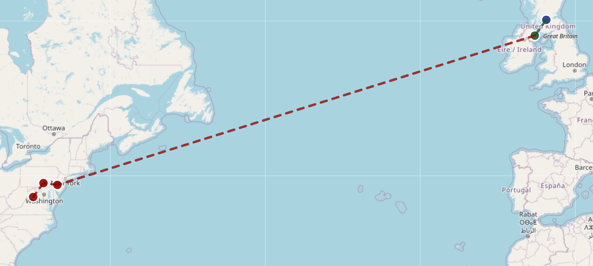
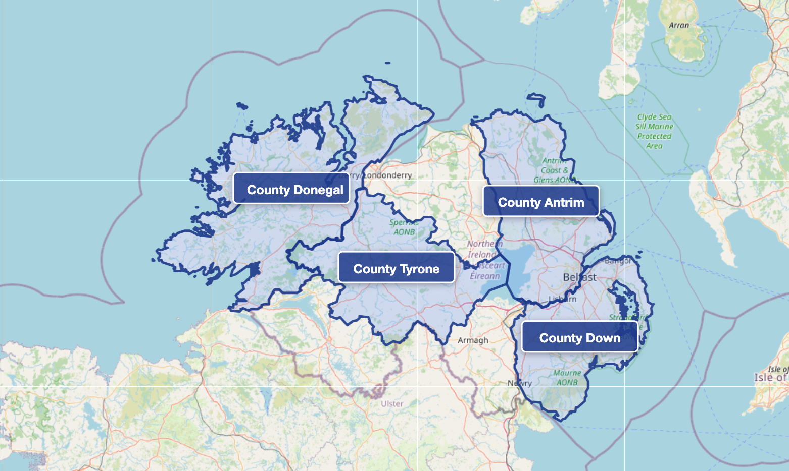

Introduction to McCreary Heritage
Welcome to the story of the McCreary family—a story that spans centuries and continents, from the rugged highlands of Scotland to the green hills of Ireland, and finally across the Atlantic Ocean to North America. This is more than just a collection of names and dates. It's the story of real people who faced hardships, made difficult choices, and built new lives in unfamiliar lands.
If you're reading this, you might be researching your own family history, completing a school project, or simply curious about how ordinary people lived through extraordinary times. Whatever brought you here, you'll discover that the McCreary family's journey is deeply connected to major historical events that shaped the modern world. The only way we can understand why our ancestors made the decisions they did is to understand the historical context of the time they lived.
Who Were the McCrearys?
The McCreary surname has its roots in Scotland, though you might see it spelled in different ways: MacCreary, McCreery, McCrory, MacRory, or even Magrory. In Scottish Gaelic, the name Mac Ruairidh means "son of Rory," with Rory itself meaning "red king." Like many Scottish surnames, it identifies a family's ancestral line and connects them to a particular clan or region.
The McCrearys were part of Scotland's complex clan system, where extended families lived together, shared resources, and defended common territory. Understanding where your ancestors came from—and why they left—requires looking beyond individual family trees to see the bigger picture of Scottish and Irish history.

The Three-Part Journey
The McCreary story unfolds in three distinct chapters, each shaped by the politics, economics, and religious conflicts of its time:
1. Scotland: The Homeland (Before 1600s)
The McCreary families originated in Scotland, particularly in the western regions and islands. Scotland in the 1500s and early 1600s was a place of both beauty and hardship. Families farmed small plots of land, raised livestock, and lived in tight-knit communities. However, Scotland was also experiencing significant upheaval. Religious conflicts between Catholics and Protestants created tension, while English political pressure threatened Scottish independence. For many Scottish families, economic opportunity was limited, and life was becoming increasingly difficult.
2. Ireland: The Ulster Plantation (1600s-1700s)
Beginning in the early 1600s, the British government implemented a plan called the Ulster Plantation—a organized settlement scheme designed to establish Protestant communities in northern Ireland (Ulster). Thousands of Scottish families, including many McCrearys, were offered land and incentives to relocate across the narrow sea to Ireland.
This migration wasn't simply about seeking better farmland. It was part of a larger political strategy to control Ireland by transplanting loyal Protestant settlers into a predominantly Catholic region. The Scottish settlers who accepted this opportunity—who would become known as the Scotch-Irish or Ulster Scots—found themselves in a complicated position. They were newcomers in a land where they weren't entirely welcome, caught between their Scottish heritage and their new Irish home.

3. North America: The Great Migration (1700s-1800s)
By the early 1700s, life in Ulster had become difficult for many Scotch-Irish families. They faced high rents imposed by English landlords, restrictions on their Presbyterian religious practices, and limited economic opportunities. When they heard about available land in the American colonies, many McCreary families made the momentous decision to cross the Atlantic Ocean—a dangerous journey that typically took six to eight weeks.
In North America, McCreary families primarily settled in Pennsylvania, Virginia, North Carolina, South Carolina, and later pushed westward into Tennessee, Kentucky, and beyond. They brought with them their Presbyterian faith, their farming skills, their traditions, and their fierce independence. These qualities would help shape the character of the American frontier.
Why This History Matters
You might wonder why we should care about events that happened centuries ago. Here are several reasons why McCreary family heritage remains relevant today:
Understanding Identity: If you have McCreary ancestors, their experiences are part of your own family story. Knowing where you came from helps you understand who you are.
Historical Connections: The McCreary family's journey touches on major historical themes—religious conflict, colonialism, immigration, and the settlement of the American frontier. Their personal stories make these abstract historical concepts real and relatable.
Cultural Heritage: The Scotch-Irish brought distinctive traditions in music, language, food, and community life that still influence American culture today, particularly in Appalachia and the American South.
Research Skills: Tracing family history teaches valuable research skills—how to evaluate sources, verify information, and piece together evidence to solve historical mysteries.
Human Resilience: Perhaps most importantly, these stories remind us of human courage and adaptability. The McCrearys and families like them faced uncertain futures, left everything familiar behind, and built new lives from scratch—not once, but multiple times.
[Suggested Image: Three-panel comparison showing traditional Scottish, Ulster Irish, and American frontier settlements]
What You'll Find on This Site
This website is organized to help you explore McCreary heritage from multiple angles:
If you're researching your family tree, you'll find documented family lines, genealogical resources, and tips for connecting to McCreary ancestry. The Family History & Genealogy section provides the tools you need to trace your own connections.
If you're studying history, you'll discover how the McCreary story fits into broader historical movements. The Historical Timeline & Context section connects family history to major events like the Protestant Reformation, the Ulster Plantation, and American westward expansion.
If you're interested in geography, interactive maps show migration patterns and settlement locations. The Geography & Settlement Patterns section explains why families chose particular locations and how the physical landscape shaped their lives.
If you're planning a heritage trip, the Heritage Tourism Guide provides practical information for visiting McCreary-related sites in Scotland and Ireland today.
If you're a teacher or student, the Educational Resources section offers lesson plans, primary sources, and materials designed specifically for classroom use.
Throughout the site, you'll find personal stories that bring history to life—letters, diaries, biographies, and accounts that show how individual McCreary family members experienced the major events of their times.
How to Use This Site
Everyone comes to family history with different interests and different levels of experience. Here are some suggestions for getting started:
- Use the search function to look for specific names, places, or topics
- Follow the chronological path through the Historical Timeline to see how events unfolded
- Explore the maps in the Geography section to visualize migration patterns
- Read individual stories in the Stories & Biographies section to connect with personal experiences
- Check the Glossary whenever you encounter unfamiliar terms
- Consult the Resources section for links to archives, databases, and other research tools
Remember, this is an ongoing research project. Family history is never truly complete—there are always new discoveries to be made, new connections to establish, and new stories to uncover. If you have information to contribute or questions to ask, please use the Contact page to get in touch.
[Suggested Chart: Timeline showing major events in McCreary family history from 1500-1900, with parallel tracks for Scotland, Ireland, and North America]
Beginning the Journey
The McCreary family story is ultimately about movement—physical movement across oceans and borders, but also social movement as families adapted to new circumstances and built new communities. It's about the push and pull of history: being pushed out by religious persecution and economic hardship, pulled forward by the promise of land and opportunity.
As you explore this site, try to imagine the real people behind the historical facts. Picture a Scottish farmer deciding whether to accept land in Ulster. Envision a family boarding a ship for America, not knowing if they would survive the voyage. Consider what it meant to carve a farm from wilderness, to build a church in a new settlement, to maintain old traditions while adapting to new realities.
Their choices created possibilities for future generations—possibly including you. Their story is worth knowing, worth preserving, and worth passing on.